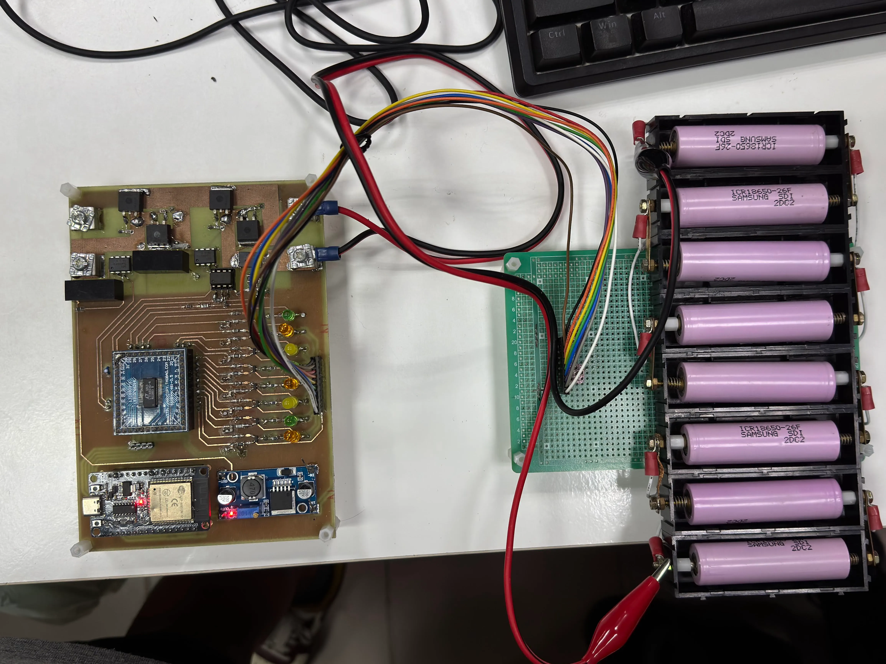

Feb 2026 to present · Lead, hardware and software · 2 people
Battery management system
A BMS built around the LTC6803 cell monitor with an ESP32. I designed the board in KiCad and wrote everything that runs on it, from firmware to the desktop app. It was built with Professor Yao-Ching Hsieh (NSYSU) and advisor Hideo Pratama.
RepositoryHardware, built
LTC6803 cell monitor, passive balancing, temperature sensing, current sensing, ESP32.
Working
State-of-charge estimation. Basic control of charge, discharge and balancing. ESP32 on Wi-Fi to Firebase, commanded from a website and a Visual Basic desktop app.
In progress
Active balancing with a flyback pack-to-cell design. Turning the software into a full application, mobile and desktop.